Imprima
PDFs em A4, escala real. Configuração 100% — sem redimensionar nem adivinhar.
Natal Feito à Mão
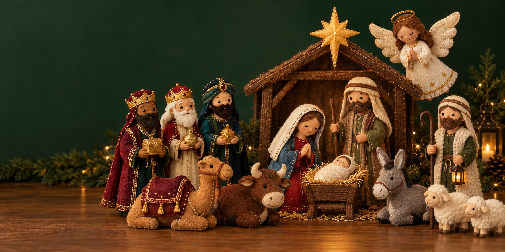
Sem juntar moldes soltos, adivinhar medidas ou descobrir sozinha como cada peça deve ficar. Você recebe a cena completa em A4, escala real, com o passo a passo para recortar, costurar à mão e montar.
Ainda dá tempo de costurar com calma até o Natal.
Quero montar meu presépio · R$37Produto digital · Acesso imediato · Garantia de 7 dias
O momento
Imagine ajeitar Maria e José ao lado da manjedoura, posicionar o anjo, os Reis e os animais — e olhar para a cena completa que antes existia só na foto. Feita à mão. No seu ritmo. No seu Natal.
Como funciona
PDFs em A4, escala real. Configuração 100% — sem redimensionar nem adivinhar.
Cada parte vem nomeada, com quantidade de corte e cor sugerida.
Pontos manuais simples. Máquina não é obrigatória.
Siga o manual até a cena completa no lugar.
Prova do arquivo
Não é só um mockup fechado. É o caminho organizado: da folha impressa à peça — e da peça à mesa.
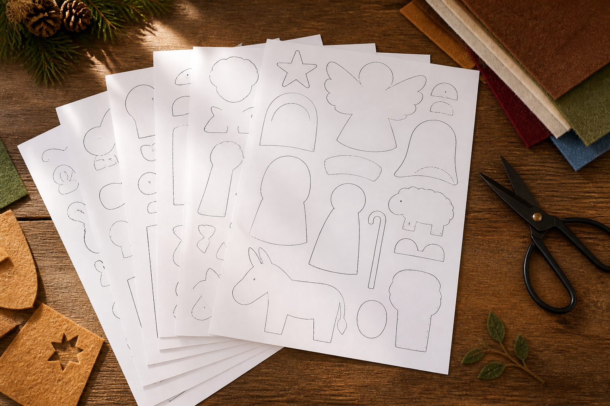
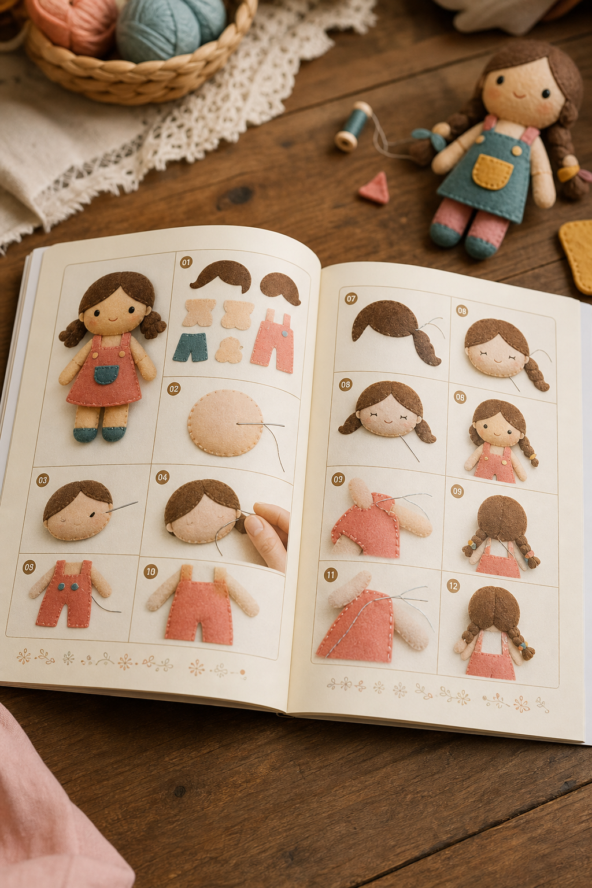
Cada contorno faz parte da cena. Você imprime em escala real e recorta sabendo o que está nas mãos — não um amontoado de silhuetas sem nome.
Onde começar, como unir, onde deixar abertura, quanto preencher e como fechar. Feito para quem prefere PDF claro a vídeo longo.
O mecanismo
A concorrência real não é outro PDF de R$37. É Pinterest, YouTube e moldes grátis espalhados. Você não paga por um desenho — paga para não montar o quebra-cabeça sozinha.
A cena completa
São 7 grupos pensados para ficar juntos: Maria, José, Menino Jesus, anjo, Reis Magos, pastor e animais — no mesmo estilo e proporção, para a mesa ficar harmônica, não um amontoado de peças soltas.
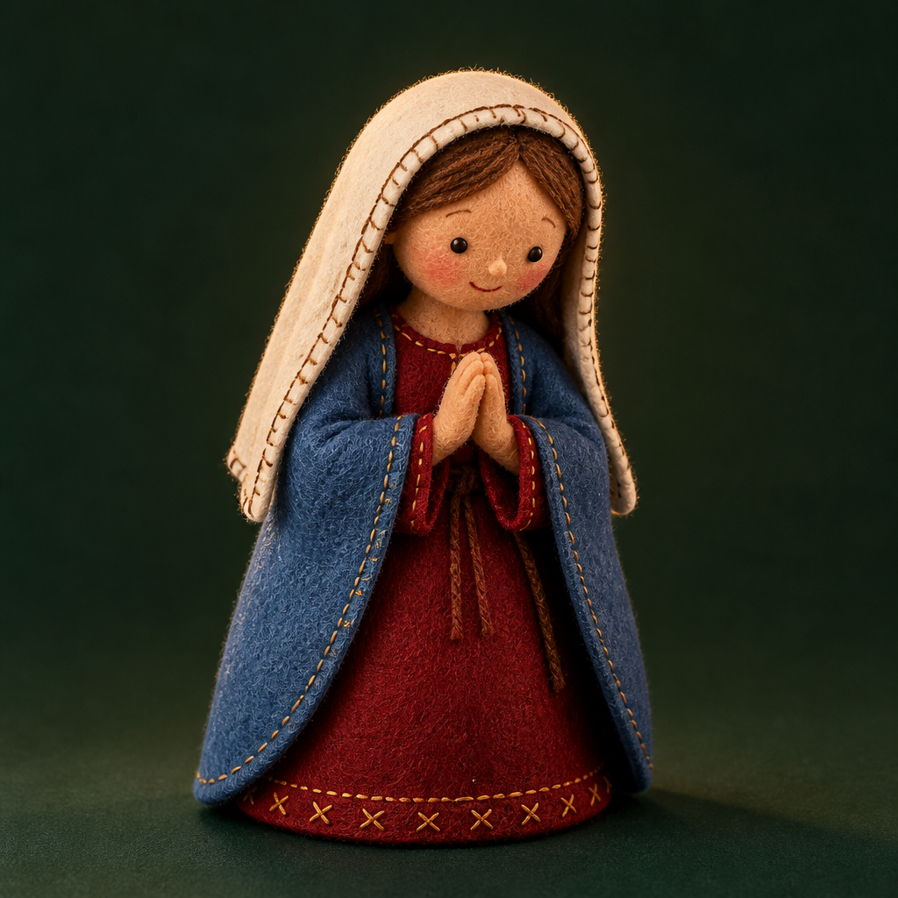
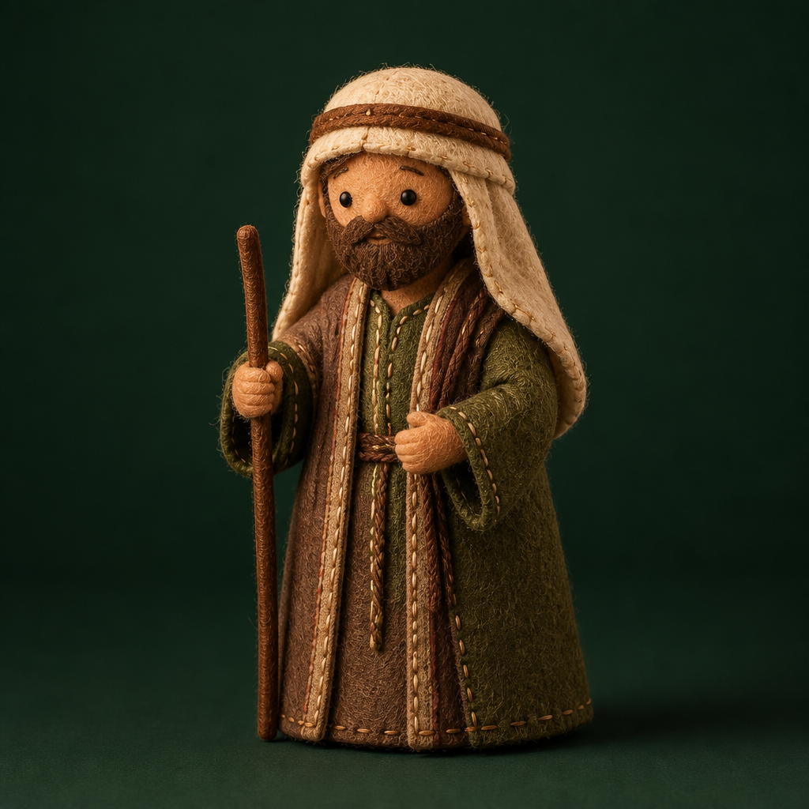
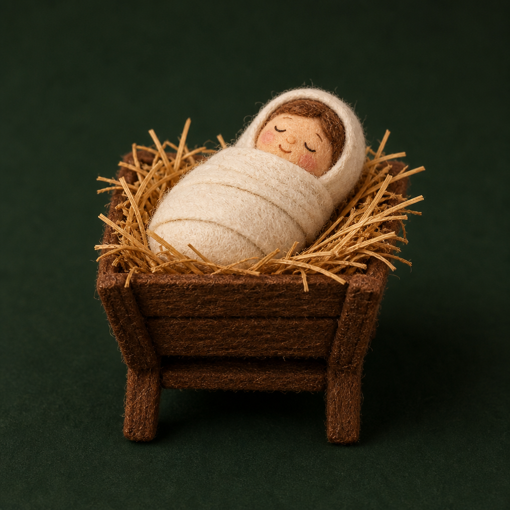
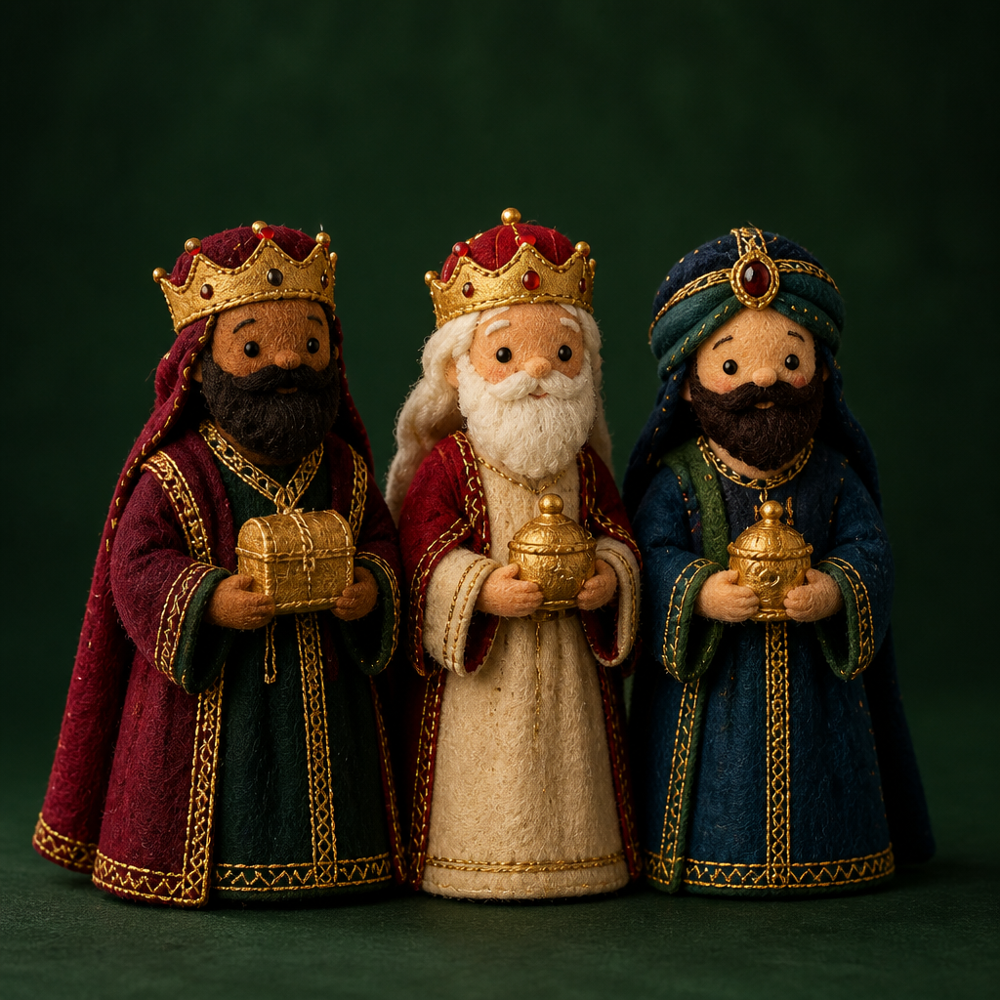
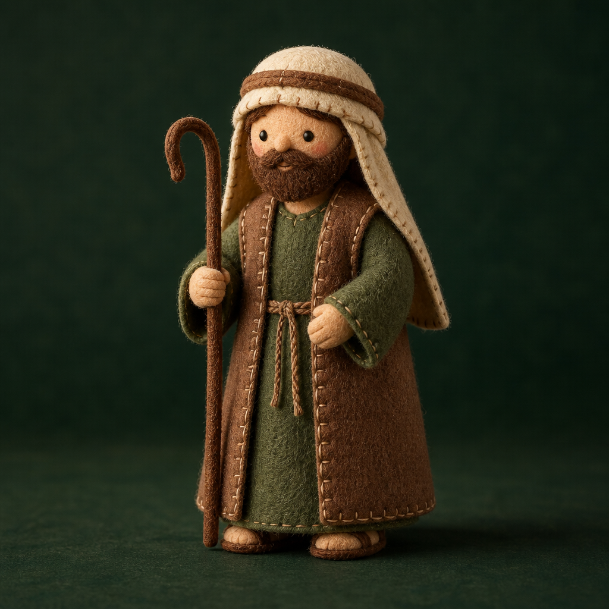
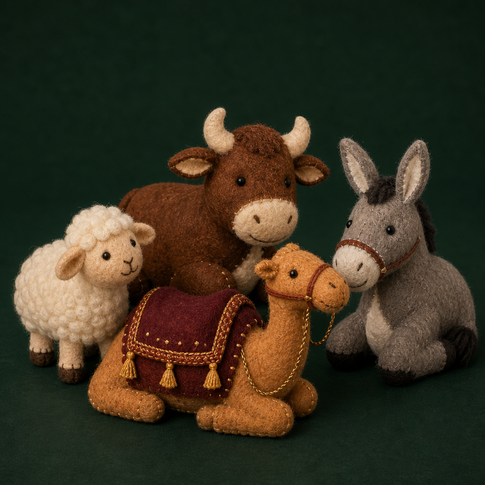
Mesmo sem experiência
Você não precisa saber usar máquina. O manual cobre o essencial da montagem à mão:
O que você recebe
Arquivos organizados para imprimir e costurar — clareza do começo ao fim, não aula interminável.
7 grupos em A4, escala real: Maria, José, Menino Jesus, anjo, Reis Magos, pastor e animais. Partes nomeadas, quantidade de corte e cor sugerida.
EssencialPontos manuais, enchimento, união, rostos e acabamento — do primeiro corte à peça em pé.
Incluso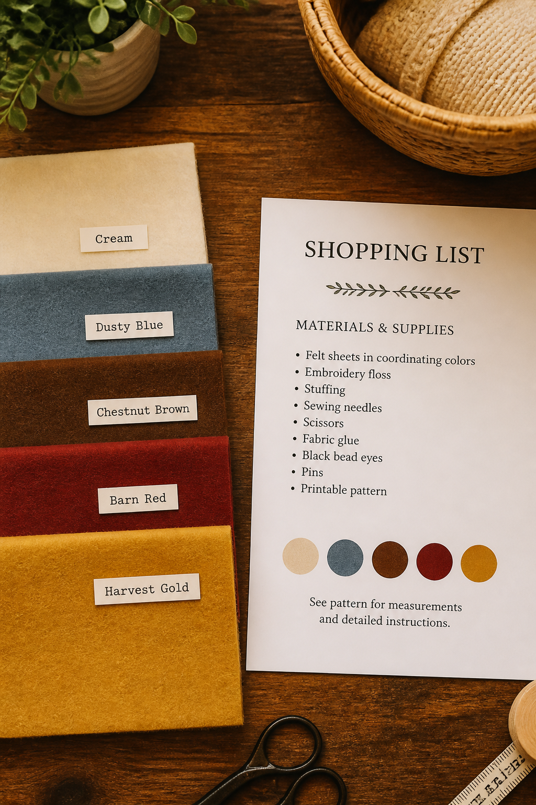
Lista pronta de feltros, linhas, enchimento e acessórios. Compre uma vez, sem erro na loja.
Incluso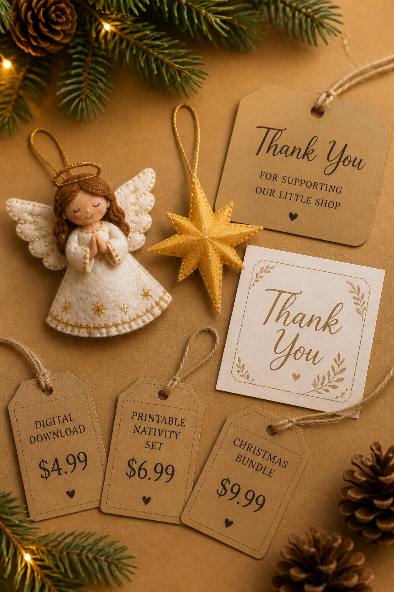
Moldes extras no mesmo espírito do Natal, para acompanhar o presépio ou presentear.
InclusoPara quem é
Se a sua prioridade é a peça na mesa — harmônica, completa, no estilo da foto — este pacote foi feito para você.
Oferta Natal Feito à Mão
Tudo organizado para você imprimir e montar a cena deste Natal — sem montar o quebra-cabeça sozinha.
Acesso imediato aos PDFs.
Em vez de caçar moldes soltos, ajustar escalas e descobrir materiais na tentativa — você recebe o caminho pronto.
pelo pacote completo organizado
Acesso imediato · Garantia de 7 diasGarantia simples
Abra os moldes. Confira a organização. Veja o manual e a lista de materiais. Se perceber que não é o que esperava, você tem 7 dias após a compra para solicitar o reembolso — sem enrolação.
Dúvidas frequentes
Não. Você recebe PDFs para imprimir em casa ou em qualquer gráfica, em folhas A4.
Os moldes reproduzem o estilo e a proporção da cena. Cores de feltro, pontos, enchimento e acabamento manual podem gerar pequenas diferenças — o resultado é no mesmo espírito da foto, feito pelas suas mãos.
Os arquivos vêm em tamanho real para A4. Imprima em escala 100% (tamanho real), sem “ajustar à página”. As medidas de referência de cada personagem estão no guia, para você planejar o espaço na mesa.
Não. Já vem em escala real. Impressão em 100% / tamanho real.
Sim, se você topa seguir um PDF passo a passo. O projeto é de costura à mão, com pontos simples. O manual cobre união, enchimento e acabamento — máquina não é obrigatória.
Não. O pacote é 100% PDF: moldes + guias. Ideal se você prefere seguir no papel, no seu ritmo, sem tela aberta o tempo todo.
Não. Feltro, linhas, enchimento e acessórios você compra à parte. A lista pronta vem no guia de materiais, para evitar ida errada à loja.
Moldes grátis quase nunca vêm como uma cena fechada: mesma escala, mesmo estilo, ordem de montagem e lista de materiais. Aqui você compra o caminho organizado — não uma folha solta para montar o quebra-cabeça sozinha.
Sim, se você começar agora e avançar peça a peça. Separe um tempo para imprimir e recortar; depois monte no seu ritmo — uma personagem por vez também funciona. Quanto antes começar, mais folga até a data.
Sim: acesso imediato após a compra. Os PDFs abrem no celular, tablet ou computador. Para costurar com conforto, muitos preferem imprimir em A4.
Reembolso em até 7 dias após a compra, se ao abrir os arquivos perceber que não é o que precisava.